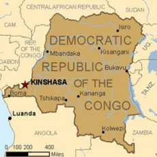

RD Congo: Solar energy in DR CONGO
Voici la communication (en anglais) préparée par M. Jean Mudekereza, président de TDJ Congo, pour une conférence dans une université d'Allemagne auquel il était invité. Malheureusement, pour des raisons de visas, il n'a pas pu donner la conférence mais il la partage gracieusement avec nous.
Introduction
 Everywhere
in the World, supplying
energy services, particularly
for poor households,
contributes to the millennium
development objectives
realization. Without energy
resources, it is impossible
to ensure the economic growth
and make recoil poverty. The
energy is important for all
the economy sectors: it
permit the transport of
persons and goods and supply
electricity which is
necessary for industrial,
commercial and agricultural
activities and essential
social services like
education and
health.
Everywhere
in the World, supplying
energy services, particularly
for poor households,
contributes to the millennium
development objectives
realization. Without energy
resources, it is impossible
to ensure the economic growth
and make recoil poverty. The
energy is important for all
the economy sectors: it
permit the transport of
persons and goods and supply
electricity which is
necessary for industrial,
commercial and agricultural
activities and essential
social services like
education and
health.
However, our country DR CONGO has an energy deficit while it has an abundant of enormous potentialities in electricity. This situation curbs the growth and the development of this country. Many households in rural areas are still being dependent on solid fuel for the cooking, the heating and didn’t have access to electricity. These households, in particular women and children are dangerously exposure to smoke and they have no means to improve their income.
Consequently; productivity, competitiveness and job and also economic activity and the growth are harshly affected. For that, as the government is not able to fill the energy deficit in rural areas, the solution is to resort to renewable energies as it happens solar energy by requiring private sector.
The country general presentation
Locating in the Africa centre, The Democratic republic of Congo is the country straddle on equator. Its area is about 2,345,409 square kilometres and sharing its borders with 9 neighbouring countries namely: Le Congo Brazza at the West, the Central African Republic and Sudan in the North; Uganda, Ruanda, Burundi and Tanzania in the East part; Zambia and Angola in South part.
The country is characteristic of Congo basin hydrographical which stretches to 3.831.400 square kilometres. The Congo river whose length is 4.700 km has the rate of flow on average of 40.000 m3/s, that why it’s the first in Africa and the second in world after Amazone. This river is a large basis of the communication system in our country and its immense basin cover all of the central area and its covered by thick forest. To extremes East of this basin rise up cheeseboard and mountain chain named Mitumba which has altitude around 5,000 meters. Mountains surrounding the Congo basin are crossing by many waterways which watering all the territory of DR CONGO.
The DR CONGO knows three climates areas namely equatorial climate in the country centre, tropical climate at the north and the south and temperate on the East high mountains. More than the half of the country is covered by forests which represent 60 % of all African forest.
The DR CONGO take in the diversify wildlife with sometimes rare species like OKAPI BONOBO,... which constitute the national and African pride. Some sites are listed global heritage by UNESCO
Demographically, the Congolese population is more than 70,000,000 inhabitant with the growth rate of 3,5 % and whose demographic indicator show : 48 % for men and 52 of women.
70 % of the population live in rural areas and the majority of this majority of this population make substance agriculture. The high part of the population practice the hunting, the fishing and artisanal mining
In economic terms, DR CONGO is a country with an under soil and soil potentially rich. Thus, the under soil of DR CONGO is full of copper, gold, diamond, petrol, uranium,... Although this country has got all these wealth, population is in poverty because of plunder, misappropriation of funds by political leaders and different wars which conducted to the destruction of socio economic infrastructures.
Energetic context of DR CONGO
The Democratic republic of Congo remains one of the rare countries in the world equipped with important hydroelectric resources. Its exploitable natural energy for the hydroelectricity is estimated at 774.000 GWh, that is to say 66% of the potential of central Africa, 35% of the total potential of the African continent and 8% of the potential of world annual production. The RD CONGO comes indeed, in first place to central Africa (before Cameroun 115.000 GWh). In the world, the RD CONGO is placed in third position after China and Canada. The potential of the RD CONGO results in an exploitable power of approximately 100.000 MW of which about half (44.000 MW) is concentrated on the only site of INGA, which makes of this last the largest layer of hydraulic power in the world.
Energy usable dissipated annually by the rapids and the falls of INGA amounts to approximately 370.000 GWh. This enormous potential of the RD CONGO, is almost unexploited.
The RD Congo is in a very high band of sunning whose values lie between 3.250 and 6.000 Watt peak/m ² /J for solar energy. Wood and the charcoal represent on average more than 80% of the primary energy consumed in RD CONGO.
The geothermic potential is consisted of the geothermic sites and of the active volcanoes in the East part of the country, but which is almost not exploited.
The RD CONGO has moreover
important electro-energy
resources others that those
hydraulic.
Rural electrification in DR CONGO
Rural electrification is defined here as the process by which access to electricity is provided to households or villages located in the isolated or remote areas of our country. Remote or rural regions lacking electricity supply are often characterised by well identified challenges. They may lie at a reasonable distance from national or regional electricity grids, may be difficult to access (far from urban centres with a difficult terrain such as large rivers or jungles), or may suffer harsh climatic conditions that render electrification through grid extension a perilous task. Rural communities are also often highly dispersed with a low population density and characterised by a low level of education, low load density generally concentrated at evening peak hours, and low revenues. Adding to these challenges, the rural poor without access to electricity either spend relatively large amounts of their scarce financial resources on energy, or a disproportionate amount of time collecting firewood. In light of these challenges, electricity provision to the world’s rural poor calls for a committed and long-term action plan. The benefits that electricity access brings to households and communities are justified not only on social and economic grounds but also on grounds of equity objectives.
Although the RD CONGO has capacities and potentialities which can permit it to produce electricity to serve all the country and connect also all the African continent, these potentialities are not transformed into richness so that they can benefit to the populations. Thus, according to the statistics of the ministry for energy, it’s only 6% of the population of the RD CONGO who has access to electricity. This population is that who is living in urban and semi urban areas. And even those who have access to electricity, they know also problems of unballasting. It means that, the distribution of the electricity in the households is done one or two time per week. What causes enormous difficulties to these households having access to electricity.
This problem arises with much acuity in rural areas which represent 70% of the population of this country and which almost does not have access to electricity. This situation is due to the outdatedness of the majority of the hydroelectric dams and lack of investment in the energetic sector in order to build new dams which can serve all the inhabitants of this country.
That why populations are in the very hard situation due to difficulties to access to electricity and haven’t possibilities to promote their economic activities. So, they don’t have access to information, internet, extern markets and drinking water. The population use the woods to cook. This situation causes the deforestation of mountains, valleys and contributes to the desertification of different areas like Ruzizi plain in Uvira Territory and the appearance of illnesses caused by the smoke.
So, the solution of the renewable energy like solar energy can contribute to the resolution of these problems.
Solar energy place in DR CONGO rural areas
As said above, only 6 % of Congolese population has access to electricity. This percentage represents 5 % in urban areas and 1 % in rural areas. The reminder that is 94% of the population at majority rural does not have access to electricity.
According to the information to our possession, there is no village or people who have access to solar energy formally in rural areas except particular cases.
For that,
*
People sleep in obscurity
using the fuel traditional
lamps which pollute bed rooms
with black smock;
*
Villagers cross the long
distance to urban centres for
charging telephones;
* Women
pant their children in
obscurity;
* Women
use woods to cook
*
Population is in poverty
To put the end to this situation, it’s preferable to place at population’s disposal in the rural areas, the solar energy technology. Indeed, this technology will enable the rural population to understand the using of solar energy and use it for his wellbeing. In that condition, the population in rural areas will be able to use solar energy for:
*
Lighting which doesn’t
pollute the atmosphere;
*
Connecting their radios and
accessing to information and
watch TV
*
Accessing to solar cooking
and abandon woods which
contribute
deforestation
How to have access to solar energy in rural areas
All the households in rural areas in this country are very poor. It is impossible and very difficult to have much money for buying the solar system. For that, as the initial investment costs are usually too high for a rural population. Therefore, a financing plan tailored to the user, for example through micro-credits, is an important tool for making solar facilities affordable.
By analysing the payments which a user has been making for the conventional energy sources for which the solar facility will now be substituted, it is possible to calculate realistic monthly rates. In addition, users can make a profit from solar facilities, which can also be considered in the calculations.
For that, this solution can be less expensive and sustainable.
Conclusions et Recommandations
As demonstrated above, the power for rural areas in DR CONGO is a complex challenge. Areas which are not connected to the grid also usually have little or no access to other infrastructure such as running water, paved roads, and health care, as well as education and communication. Inhabitants of rural areas expect an improvement in infrastructure, which expectation is often strengthened by political promises.
Here, rural exodus is primarily caused by a lack of infrastructure. Therefore, sources of income and available cash are scarce in rural areas, which mean that users have only very limited possibilities for investing in renewable energies. According to research we have realized, the result has shown that a business interest for both the provider and the user are conducive to the long-term and overall success of an electrification project. Projects which can be heavily funded by international aid organisations can fail after only a short time. As users are usually unfamiliar with solar technology, user training must be offered. Demonstration projects are useful for introducing solar energy applications to the rural population. The above considerations create a complex matrix of factors which influence the electrical power supply of off-grid areas through solar energy.
Apart from that, in rural areas, people still rely on the traditional use of biomass energy for cooking, baking and heating. Most cooking is usually done on a 3-stone-fire, a method that wastes around 90 % of the biomass energy. The open fire also causes high smoke emissions, which are hazardous to health. Indoor air pollution.
To put the end to these problems in rural areas in our country, the solar energy is still the solution for the poor households.
Particularly attractive
for countries with ample
sunlight and whose rural
electricity grid is poorly
developed, PV systems can
provide electricity to
relatively dispersed
populations but also to
groups of houses or entire
villages. The most common
systems which will be used in
rural areas in our countries
are solar home systems (SHS),
which have the potential to
power light bulbs and small
appliances such as
televisions, radios or
fans.